a. Loại đòn ngang
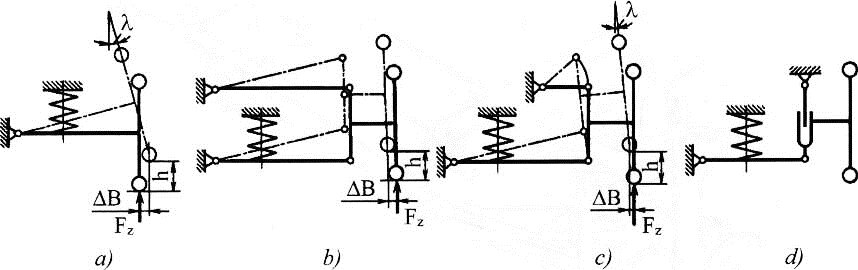
Hình 11.12. Sơ đồ bộ phận dẫn hướng loại đòn ngang
a- Loại một đòn; b- Loại hai đòn hình bình hành; c- Loại hai đòn hình thang; d- Hệ thống treo MacPherson.
Ở bộ phận dẫn hướng sử dụng đòn ngang khi bánh xe dao động (tức là có dịch chuyển thẳng đứng) sẽ có dịch chuyển ngang của bánh xe và lệch trục quay của bánh xe (hình 11.12). Trên hình 11.12 ta thấy khi có dịch chuyển thẳng đứng h sẽ gây ra:
Dịch chuyển theo chiều ngang của bánh xe ∆B;
Góc : góc nghiêng của mặt phẳng bánh xe hay góc lệch của trục bánh xe so với vị trí ban đầu.
Như đã nói ở trên, nếu dịch chuyển ngang ∆B vượt quá biến dạng đàn hồi của lốp thi bánh xe sẽ bị trượt và lốp sẽ bị mòn. Còn góc
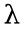
, sẽ tạo ra hiệu ứng con quay của bánh xe. Bánh xe có khối lượng lớn và quay với vận tốc lớn thì hiệu ứng con quay sẽ tạo nên tải trọng phụ lên các ổ bi, trục và các chi tiết của bộ phận dẫn hướng.Mặt khác đòn ngang chịu lực ngang tốt nhưng chịu lực dọc kém. Vì vậy, kết cấu của của bộ phận dẫn hướng đòn ngang phải đảm bảo truyền được lực thẳng đứng và đảm bảo ∆B và  (hình 11.12) nằm trong phạm vi cho phép.
(hình 11.12) nằm trong phạm vi cho phép.
Bộ phận dẫn hướng loại đòn ngang có thể có một số loại sau đây (hình 11.12):
Loại một đòn (hình 11.12a), loại này hầu như ít được dùng;
Loại hai đòn hình bình hành (hình 11.12b);
Loại hai đòn hình thang (hình 11.12c);
Loại MacPherson (hình 11.12.d).
Loại hai đòn hình bình hành
Loại hai đòn hình bình hành (hình 11.12b và 11.13) có kết cấu bao gồm hai đòn ngang bằng nhau và một đòn đứng, kết hợp với khung xe tạo thành một cơ cấu 4 khâu hình bình hành. Loại này không có góc lệch trục bánh xe ( = 0) tuy nhiên lại có dịch chuyển ngang của bánh xe ∆B lớn.
Để truyền được lực dọc, các đòn ngang có kết cấu như hình 11.13, đòn dưới có kết cấu hình chữ A còn đòn trên có kết cấu hình chữ A hoặc chữ V. Loại bộ phận dẫn hướng này cũng ít được dùng.
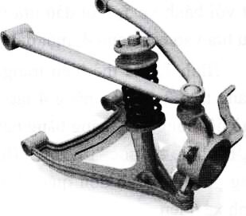
Hình 11.13. Bộ phận dẫn hướng hình bình hành cơ cấu bốn khâu hình bình hành
Loại hai đòn hình thang
Loại hai đòn hình thang được dùng khá phổ biến trên xe con. Loại này có kết cấu bao gồm hai đòn ngang không bằng nhau và một đòn đứng, kết hợp với khung xe tạo thành một cơ cấu bốn khâu hình thang. Đòn ngang trên có chiều dài nhỏ hơn đòn ngang dưới. Các đòn trên và dưới của bộ phận dẫn hướng đều có kết cấu chữ A và có hai điểm bắt vào khung xe bằng khớp bản lề. Kết cấu này đảm bảo cho bộ phận dẫn hướng có thể truyền được lực dọc. Ví dụ: Hyundai Tucson, Kia Sorento (cầu trước độc lập).
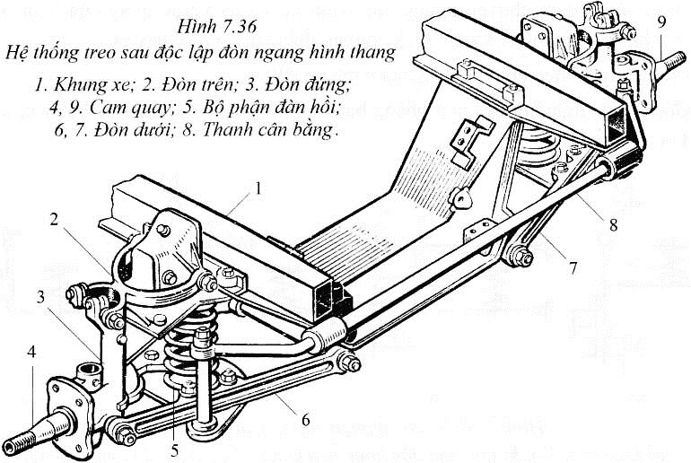
Hình 11.14. Hệ thống treo sau độc lập đòn ngang hình thang.
1- Khung xe; 2- Đòn trên; 3- Đòn đứng; 4, 9- Cam quay; 5- Bộ phận đàn hồi;
6, 7- Đòn dưới; 8- Thanh cân bằng.
Hình 11.14 thể hiện hệ thống treo với bộ phận dẫn hướng đòn ngang hình thang lắp cho bánh xe không dẫn hướng (bánh xe sau). Bộ phận dẫn hướng có đòn trên 2 nhỏ hơn đòn dưới 6 (và 7); cam quay bánh xe 4 được bắt với đòn đứng 3. Đòn trên 2, đòn dưới 6, đòn đứng 3 và khung xe 1 tạo thành cơ cấu bốn khâu hình thang.
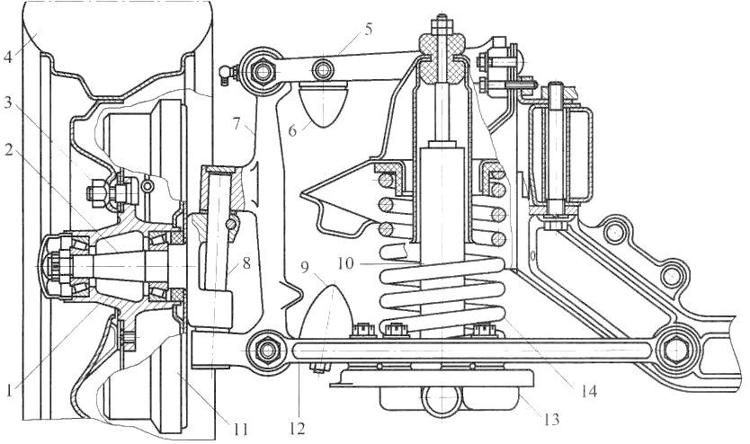
Hình 11.15. Hệ thống treo trước độc lập đòn ngang hình thang
1- Moay ơ bánh xe; 2- Cam quay; 3- Bu lông bánh xe; 4- Bánh xe; 5- Đòn trên;6, 9- Ụ cao su; 7- Đòn đứng; 8- Trụ đứng; 10- Giảm chấn; 11- Trống phanh;12- Đòn dưới; 13- Giá đỡ lò xo và giảm chấn; 14- Lò xo (bộ phận đàn hồi).
Hình 11.15 thể hiện hệ thống treo với bộ phận dẫn hướng đòn ngang hình thang lắp cho bánh xe dẫn hướng (bánh xe trước). Bộ phận dẫn hướng bao gồm đòn trên 5, đòn dưới 12 và đòn đứng 7. Trụ đứng 8 lắp với đòn đứng 7 và cam quay bánh xe 1 bắt với trụ đứng 8. Khi quay vòng, bánh xe quay quanh trụ đứng 8. Giá lò xo (bộ phận đàn hồi) và giảm chấn 13 được lắp vào đòn dưới 12.
Bộ phận dẫn hướng loại hai đòn hình thang này có dịch chuyển ngang của bánh xe ∆B và góc lệch của trục bánh xe nhỏ nếu chon tỷ lệ chiều dài giữa đòn ngang trên và dưới hợp lý. Hiện nay người ta thường chọn như sau:
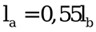
(11.1)Trong đó la là chiều dài đòn ngang trên, lb là chiều dài đòn ngang dưới.
b. Hệ thống treo MacPherson
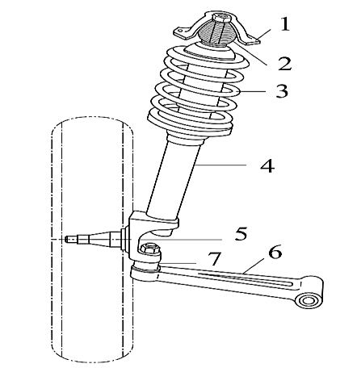
Hình 11.16. Sơ đồ hệ thống treo MacPherson
1- Giá đỡ trên; 2, 7- Ụ cao su;3- Lò xo; 4- Giảm chấn;5- Cam quay bánh xe; 6- Đòn dưới.
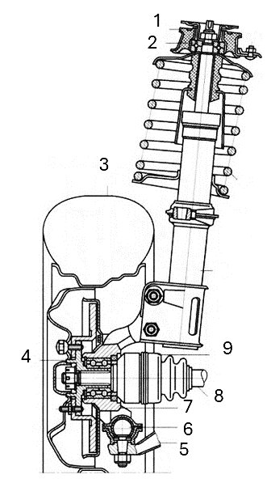
Hình 11.17. Hệ thống treo xe VAZ-2108
1- Gối cao su; 2- Ồ đỡ; 3- Bánh xe; 4- Moay ơ bánh xe; 5- Đòn ngang dưới; 6- Rô tuyn;7- Cam quay; 8- Bán trục; 9- Khớp các đăng; 10- Giảm chấn; 11- Lò xo.
Bộ phận dẫn hướng trên hệ thống treo MacPherson là một dạng biến thể của loại 2 đòn trong đó đòn trên có chiều dài = 0 (hình 11.12.d).
Vì không còn đòn ngang trên nên khi bánh xe dao động chiều dài đòn đứng sẽ thay đổi theo sự dịch chuyển của bánh xe theo chiều thẳng đứng do đó đòn đứng phải có kết cấu như trên hình 11.12.d. Ở vị trí đòn đứng này có thể lắp bộ phận đàn hồi (lò xo xoắn) và giảm chấn ống (hình 11.16, 11.17) do đó hệ thống treo MacPherson trở nên rất gọn. Hình 11.16 thể hiện kết cấu một hệ thống treo MacPherson lắp cho bánh xe bị động. Đòn ngang 6 của bộ phận dẫn hướng được bắt với khung bằng bản lề trụ và bắt với cam quay qua ụ cao su 7. Để đảm bảo truyền lực ngang, đòn ngang 6 có kết cấu như hình vẽ, nhiều trường hợp có kết cấu hình chữ A và có hai điểm bắt bản lề với thân xe như kết cấu các đòn ngang dưới của loại hình bình hành hoặc hình thang. Đòn đứng là giảm chấn ống 4, phía dưới được bắt chặt với cam quay 5 của bánh xe. Đầu trên của 4 được bắt vào giá 1 qua ụ cao su 2, giá 1 bắt chặt với khung xe. Bộ phận đàn hồi là lò xo xoắn 3 có đầu dưới tựa vào giảm chấn 4 còn đầu trên tựa vào ụ cao su 2.
Hình 11.17 thể hiện kết cấu hệ thống treo của bánh xe trước chủ động dẫn hướng của xe VAZ-2108 là hệ thống treo kiểu MacPherson. Đòn dưới 5 bắt với cam quay 7 bằng khớp cầu 6, phía còn lại bắt với khung xe. Đòn đứng là giảm chấn 10 có đầu dưới lắp chặt với cam quay 7 và đầu trên bắt với khung xe qua ổ đỡ 2 và ụ cao su 1. Ổ đỡ 2 cho phép đòn đứng có thể quay khi ô tô quay vòng. Bộ phận đàn hồi là lò xo 11 có đầu dưới tựa vào đòn đứng, giảm chấn 10 và đầu trên tựa vào khung xe. Bán trục 8 truyền mô men chủ động đến bánh xe thông qua khớp các đăng đồng tốc 9.
Ở hệ thống treo kiểu MacPherson, khi bánh xe dao động (dịch chuyển thẳng đứng), các dịch chuyển ngang ∆B và góc lệch trục bánh xe đều nhỏ. Loại hệ thống treo này ngày càng được sử dụng nhiều trên xe con.
c. Loại đòn dọc
Hình 11.18 thể hiện sơ đồ bộ phận dẫn hướng loại đòn dọc. Đòn 1 của bánh xe trái và đòn 2 của bánh xe phải. Các đòn dọc một đầu bắt với bánh xe, một đầu bắt bản lề với khung xe với trục quay nằm ngang như hình vẽ. Với kết cấu này khi bánh xe dịch chuyển thẳng đứng không có các dịch chuyển ngang cũng như góc lệch trục bánh xe. Tuy nhiên, với mỗi bánh xe một đòn như kết cấu hình 11.18 thì khi có dịch chuyển thẳng đứng của bánh xe chiều dài cơ sở xe (khoảng cách giữa hai trục bánh xe) bị thay đổi. Loại đòn dọc khả năng truyền lực dọc rất tốt nhưng truyền lực ngang kém. Để tăng khả năng truyền lực ngang, trục quay của bản lề được làm dài ra (xem hình vẽ). Bộ phận đàn hồi (lò xo) đặt lên đòn của bộ phận dẫn hướng.
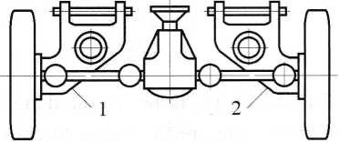
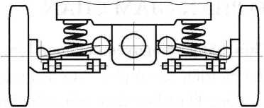
Hình 11.18. Bộ phận dẫn hướng loại đòn dọc
1- Đòn dọc trái; 2- Đòn dọc phải.
Để khắc phục các nhược điểm của loại 1 đòn dọc người ta bố trí thêm các đòn khác. Có rất nhiều cách bố trí loại đòn dọc kiểu này. Hình 11.19 là một ví dụ.
Hình 11.19 thể hiện sơ đồ bộ phận dẫn hướng loại đòn dọc có ống DeDion. Bộ phận dẫn hướng có hai đòn dưới 4 và 5, hai đòn trên 1 và 3, ống DeDion nối hai bên bánh xe. Hai đòn dưới 4 và 5 bố trí phía trước và hai đòn trên 1 và 2 bố trí phía sau các bánh xe. Với kết cấu này khi bánh xe dịch chuyển thẳng đứng, chiều dài cơ sở xe sẽ không thay đổi như trường hợp có một đòn đã trình bày ở trên. Mặt khác bố trí hai đòn, kết hợp với ống DeDion như hình vẽ sẽ làm tăng khả năng chịu lực ngang cho bộ phận dẫn hướng. Bộ phận đàn hồi (lò xo) được đặt lên các đòn dưới.
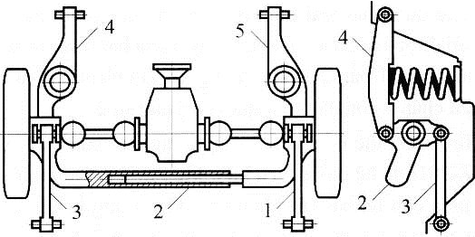
Hình 11.19. Bộ phận dẫn hướng đòn dọc và ống DeDion
1, 3- Đòn dọc trên; 3- Ông DeDion; 4, 5- Đòn dọc dưới.
d. Loại đòn chéo
Loại đòn chéo cũng thường được sử dụng trên các bộ phận dẫn hướng của hệ thống treo.
Hình 11.20 thể hiện sơ đồ bộ phận dẫn hướng loại đòn chéo. Hai đòn chéo 1 và 2 có kết cấu như hình vẽ. Loại đòn chéo cải thiện được khả năng truyền lực ngang so với loại đòn dọc. Bộ phận dẫn hướng loại này có dịch chuyển ngang của bánh xe khi dao động nhưng nhỏ.
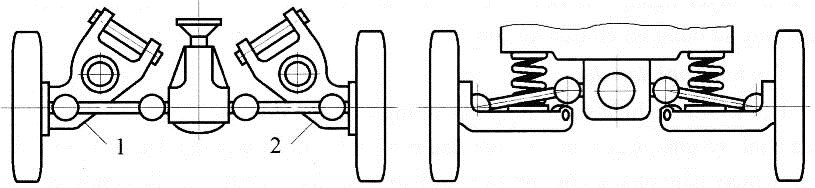
Hình 11.20. Bộ phận dẫn hướng loại đòn chéo
1- Đòn trái; 2- Đòn phải